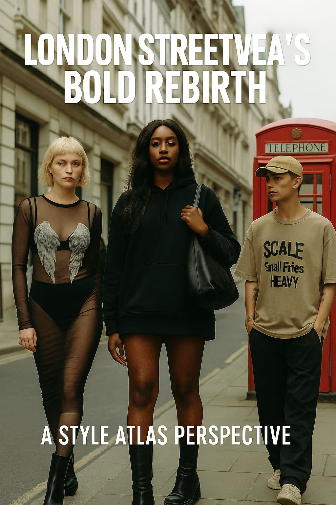

London Streetwear’s Bold Rebirth: A Style Atlas Perspective
London has always been a city of rebels. From the punk rockers who strutted down King’s Road in the '70s to the underground grime scene that reshaped urban fashion in the 2000s, the British capital has never been afraid to challenge the status quo. In 2025, London streetwear is once again undergoing a seismic shift—a bold rebirth that’s reshaping not only how we dress, but how we express ourselves. Style Atlas unpacks the cultural currents, the design revolutions, and the local influences driving this dynamic transformation.
A City Built on Contrasts
London’s streets are a paradoxical tapestry of tradition and rebellion. Tourists flock to Buckingham Palace in tailored suits and trench coats, while just a few tube stops away, teenagers in baggy cargos and avant-garde trainers gather outside graffitied skate parks. It’s this contrast—a collision of old and new—that has long made London’s streetwear scene uniquely magnetic.
Today’s Londoners are rejecting sterile minimalism in favor of vibrant self-expression. “Streetwear has evolved from a uniform into a protest,” notes Dr. Anna Hughes, a cultural anthropologist at the University of Westminster. “It’s no longer about fitting in—it’s about standing out.”
Beyond Hype: The Rise of Local Icons
Unlike the global juggernauts that dominated the 2010s—think Supreme, Off-White, and Palace—today’s London streetwear champions local talent. Emerging designers like Priya Kaur and Ayo Thompson are merging London’s multicultural heritage with innovative materials and sustainable practices, crafting garments that resonate deeply with local communities.
Priya Kaur’s 2025 collection, for example, fuses South Asian textiles with oversized cuts and gender-fluid silhouettes—a powerful statement on London’s cultural fusion. Meanwhile, Ayo Thompson’s use of recycled denim and deconstructed tailoring challenges the throwaway culture that once defined fast fashion.
“London streetwear isn’t about logo-mania anymore,” Thompson told Style Atlas in an exclusive interview. “It’s about authenticity. It’s about representing the city you love and the people who inspire you.”
The Genderless Revolution
Genderless fashion is no longer a niche conversation in London—it’s the driving force behind many streetwear collections. At markets like Brick Lane and Spitalfields, vintage stalls are teeming with oversized hoodies, fluid trousers, and statement pieces that defy traditional gender lines. The result? A democratic, inclusive fashion landscape that allows wearers to define themselves on their own terms.
London’s streetwear enthusiasts have embraced this revolution wholeheartedly. Social media is flooded with images of young Londoners mixing skirts with combat boots, hoodies with pearls, and makeup with sportswear. It’s an aesthetic born from defiance and shaped by a desire to dismantle tired stereotypes.
Tech Meets Texture: New Fabric Stories
Streetwear’s bold rebirth isn’t just about shape—it’s also about texture. London’s designers are experimenting with high-tech fabrics that challenge our assumptions of comfort and durability. Breathable mesh, waterproof ripstop, and recycled synthetics are transforming classic silhouettes into future-forward statements.
Brands like R3G3N (pronounced "Regen") are leading this innovation wave, with collections featuring UV-reactive fabrics that change color in sunlight—blurring the lines between fashion and science. Meanwhile, smaller labels are exploring tactile contrasts, like pairing plush velvets with technical nylons, to create collections that are both nostalgic and futuristic.
Community at the Core
Unlike the hype-driven releases of yesteryear, today’s London streetwear is fueled by community. Pop-up markets, zines, and underground events are reclaiming the narrative from big corporations, giving a voice to marginalized creators. These grassroots gatherings are where the city’s next icons are born—often in the back rooms of independent coffee shops or the basements of record stores.
As Style Atlas explored during a recent visit to Dalston Market, collaborations are the heartbeat of this movement. Whether it’s a DJ teaming up with a screen-printer to design limited-edition tees, or a photographer capturing the soul of a neighborhood through wearable art, the lines between disciplines are intentionally blurred. The result is a streetwear scene that is as multifaceted as the city itself.
Challenges and Opportunities Ahead
Yet even as London’s streetwear scene thrives, challenges remain. Rising rents and gentrification threaten the creative spaces that have historically nurtured underground fashion. Brexit’s lingering impact on import/export logistics complicates supply chains for independent designers. And a saturated social media landscape makes it harder for authentic voices to cut through the noise.
Despite these obstacles, the city’s creative spirit shows no signs of waning. “London is resilient,” says Dr. Hughes. “It’s always been a city of reinvention, and streetwear is just the latest chapter in that story.”
Conclusion: A Style Atlas Perspective
London streetwear’s bold rebirth in 2025 is more than a trend—it’s a testament to the city’s enduring ability to adapt, challenge, and redefine what fashion means. From genderless designs to tech-infused textiles, London’s streets have become a runway for cultural dialogue, creativity, and self-expression.
At Style Atlas, we see this rebirth not as a fleeting moment but as a powerful shift in the very fabric of London fashion. It’s a reminder that streetwear was never just about clothes—it’s about identity, belonging, and the fearless belief that fashion can change the world, one outfit at a time.
Words by Style Atlas